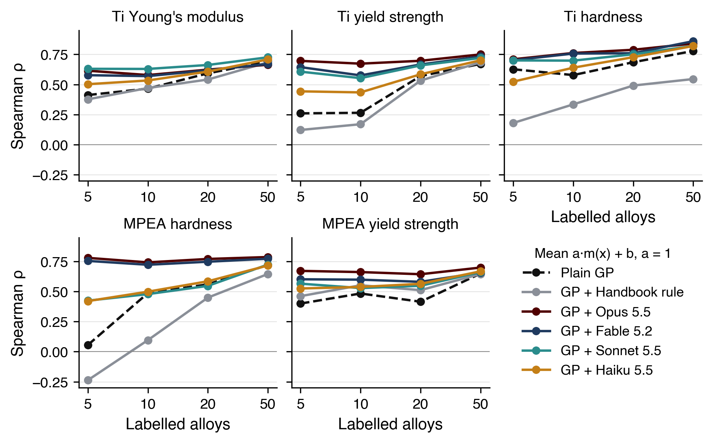

MATERIALS SCIENCE & ENGINEERING
TEXAS A&M UNIVERSITY
Department of Materials Science and Engineering
80

Slope a = 1; ρ at 5 labels
MPEA HV: 0.06 → 0.78 (Opus)
Ti HV: 0.63 → 0.52 (Haiku)
handbook, Ti HV: 0.18
handbook, MPEA HV: −0.24
at 50 labels, Ti HV: 0.55